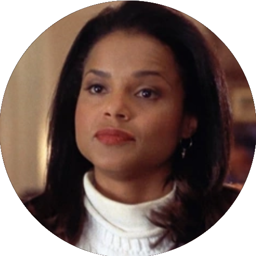
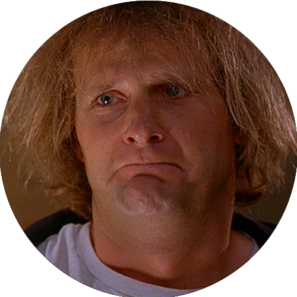
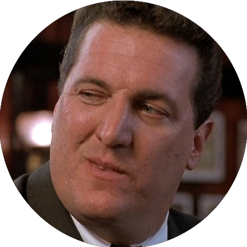
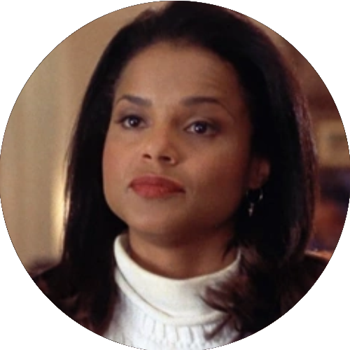
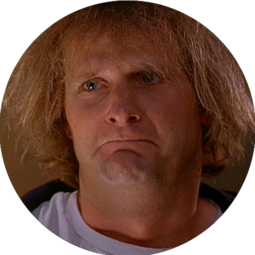
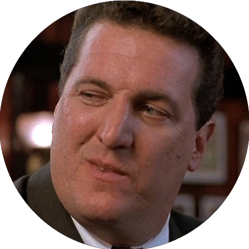

Debi & Lóide (1994)
Direção: Peter Farrelly
Distribuição: New Line Cinema
Lançamento:
 16 de dezembro de 1994
16 de dezembro de 1994
 10 de fevereiro de 1995
10 de fevereiro de 1995  ASSISTIR
ASSISTIR
Personagens
  

Direção: Peter Farrelly
Distribuição: New Line Cinema
Lançamento:
16 de dezembro de 1994
10 de fevereiro de 1995 ASSISTIR
  